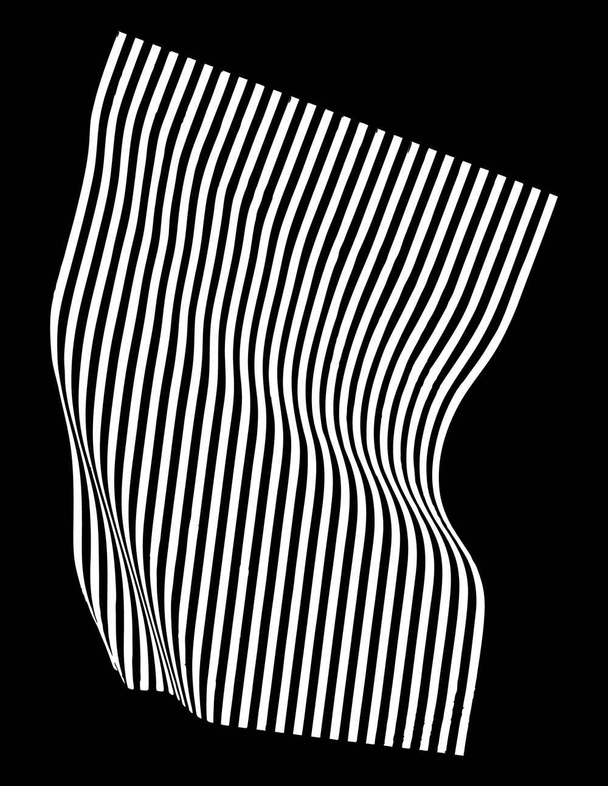
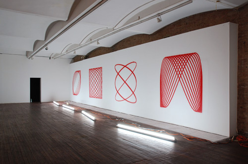
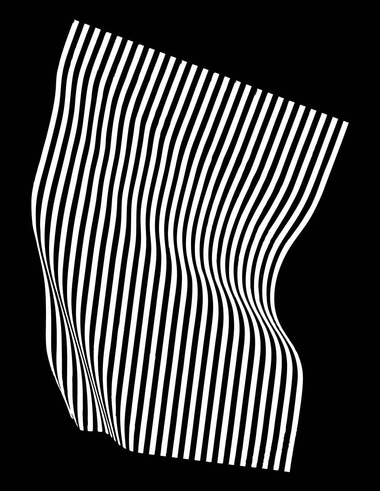
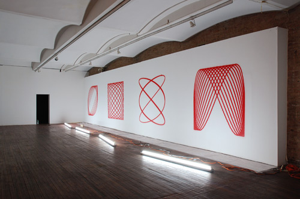

The Value of Form
by Alyar Aynetchi
How Can We Reclaim A Balance Between Form And Content?
Graphic design has evolved throughout history as an artistic and communicative discipline which has originated through the practice and development of visual forms. While graphic design is a discipline which is inherently driven by an analytical process towards the development and organisation of content, forms, and visual syntax; in recent years it has been argued that the origination of content favours a higher value than that of shaping it. And in this respect, graphic design has been predominantly redefined as a discipline which is bound to a research driven agenda, or ‘think tank’. Whereby the primary emphasis of practice points to the development of content, and the linguistic components therein; rather than employing the craft of shaping content.
Additionally, the arena of contemporary graphic design has expanded considerably beyond it’s conventional borders into a fully-fledged climate of multidisciplinary design. And in turn, graphic design has become increasingly affiliated with processes and frameworks coinciding with other artistic disciplines, and intellectual motives alike. However, while the expansion of graphic design has supplemented its development on a wider spectrum: from research, to production tools, to the greater social context; graphic design has in turn become more and more dispersed in it’s definition. And in this process, the social status of graphic design has been reformed from a ‘practice based on the development of forms’, to ‘a practice based on the development of content’.
This reform may suggest a new standard which values content over form. And while content, analysis, and research are an integral part of a design process; form is one of the most fundamental aspects of graphic design as a discipline. And hence, this poses a responsibility in how we shape our surroundings. Through the languages, systems, and forms which we establish. Through the self revising nature of the practice, and the critical re-assessment of these developments; graphic design has revised itself time and time again based on sociocultural, political, and economical circumstances.
The following thesis aims to stimulate a discussion around the value of form in contemporary graphic design. And the ways in which the field has been redefined. How do we reclaim a balance between form and content? How do we continue to shape our surroundings through current frameworks in graphic design? And how do we pose greater questions towards the development of new visual forms? And how do we validate the value of form, craft, and practice in a highly sporadic stage in graphic design discourse.
In het kader van
by Mike Kokken
How do I handle the destructive consequences of the 'why' question in my work process?
Asking questions continuously seems inherent to and necessary for art and graphic design’s existence and survival. A question can hereby follow two directions - construction (ever building on a foundation) or destruction (tearing down until there’s anything left). While men mostly thinks and executes constructive, I feel more inclined towards destruction. But not without trouble. Once I’ve started taking down, I have difficulty stopping and will eventually get stuck in the process. Because I am convinced destruction can play an important role in the question and it’s result, I would like to inspect it further.
I hope to get a better grip personally on how asking those necessary questions go “wrong” but also how it can be applied in for others in a time where changeability and uncertainty prevail. Firstly, the frame will be treated to comprehend how our view on the world is shaped and works - the fundamentals on which destruction can strike. This will be followed by the different stages destruction consists of: the *Strike*, the *Explosion* and the *Implosion*, the *Downfall*, the *Dust Cloud* and the *Ruins*. I come to see that the plausible construction works falsely and destruction is rather necessary to ask the right questions and be future-oriented.
The frame will be treated to comprehend how our view on the world is shaped and works - the fundamentals on which destruction can strike. This will be followed by the different stages destruction consists of: the *Strike*, the *Explosion* and the *Implosion*, the *Downfall*, the *Dust Cloud* and the *Ruins*. I hope to get a better grip personally on how asking those necessary questions go “wrong” but also how it can be applied in for others in a time where changeability and uncertainty prevail.
While men mostly thinks and executes constructive, I feel more inclined towards destruction. But not without trouble. Once I’ve started taking down, I have difficulty stopping and will eventually get stuck in the process. Because I am convinced destruction can play an important role in the question and it’s result, I would like to inspect it further. The frame will be treated to comprehend how our view on the world is shaped and works - the fundamentals on which destruction can strike.
Action to Surface
by Tereza Rullerova
How does performativity influence the surface?
Due to my previous artistic experience I understand using the body and an action as a method of design. Despite the fact that the terms action and surface exist in seemingly disconnected worlds, I see the possibility to establish a connection and elaborate more on a multidisciplinary link between – and coexistence of – performativity and graphic design.
The following thesis introduces the research question: How does performativity influence the surface? Encouraged to answer this question, I examine the field of performance art, graphic design craftsmanship and vernacular action. As a result I demonstrate several examples of performative acts in contemporary graphic design related visual culture and how it determines the production of its surface.
We, designers, are used to presenting graphic design as a surface-centric practice, the way of surface production. In addition to this, I try to step out of separated media constrains and tend to establish a new field of potential through identifying performative components in graphic design processes and results.
This research covers the investigation and establishment of links between action, body, designer and surface. It attempts to convince the reader, that surface production could be an action, happening, or chance-‑driven act. Therefore the text introduces necessary theoretical, philosophical and historical backgrounds of performance art.
The narrative covers examples from Leonardo da Vinci through Modernists, Post-‑War Expressionists and Andy Warhol to recent work by Hito Steyerl. It also presents graphic designers working with action in their design process. For example Sister Corita Kent’s activism, Stefan Sagmeister with his involvement of the body and nomadism, the conceptual approach of Czech designer Petr Babák, Maki Suzuki with his excitement “to do”, ephemeral surfaces and the unforgettable events of Cox and Grusenmeyer, Moniker with their Conditional Design happenings towards surface and Auto Italia’s identity of interactive assistant.
Finally, the text explains why the contemporary form of labour - Sven Lütticken’s concept of general performance - is so important. This thesis is a manifestation of the emerging designer, his/her milieu and effort to position himself/herself into the world of democratized surface production.
 


